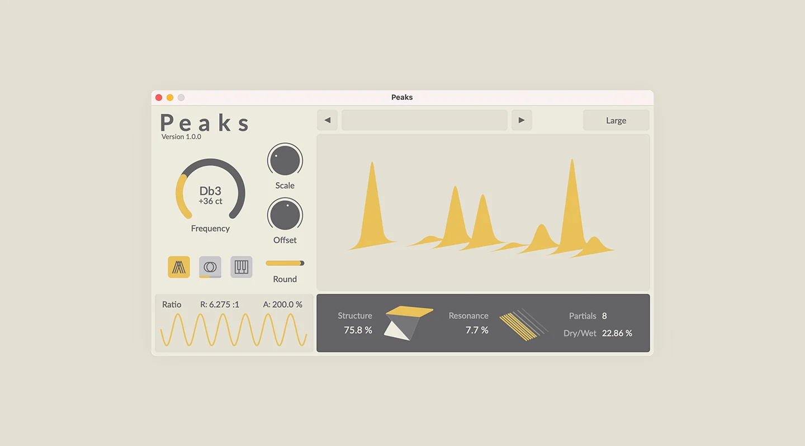
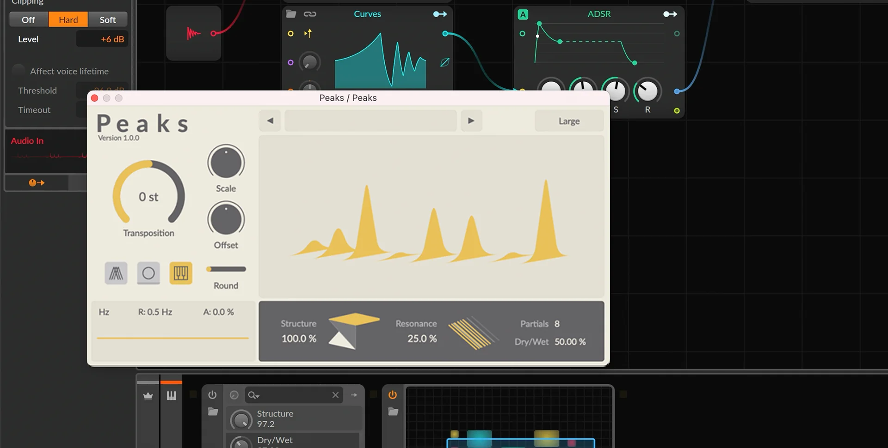

We asked a question: can a plug-in feel like a table-top instrument? Can it sit alongside the quarter-tone flat
kalimba, the craigslist fuzz pedal, or the auntie-passed down Omnichord?
With eight modal bands, external MIDI input, and audio rate modulation, Peaks gives you the lifelike, as well the
larger than life; the sweetest modal resonator.
Try hitting a glass bottle, a ceramic pot, or a wooden bowl. They all sound different, don’t they? A modal resonator
simulates these differences by modeling aspects of the object, such as size, stiffness, and geometry.
Now glass bottles don't make sound on its own, it needs to be excited with something. This could be your hand, a
mallet, or a brush. In the case of Peaks, the modal resonator is excited by an input audio source of your
choice.
Modal resonators allow acoustically grounded timbre, blurring the lines between the real and surreal.
We designed Peaks to embody the simplicity of a guitar pedal.
One control for resonance — or how long the resonance rings out, and another for structure — a simple way to explore
timbral variation.
Three controls shape the tuning of the partials — from complex glass-like resonance, to round and wood-like resonance.

Peaks is at once an audio effect an an instrument. With four voices of polyphony, run external MIDI into Peaks and
listen as field recordings, drum loops, and vinyl crackle ring out into harmony.
Input monitor and beat box a harmonic progression through Peaks.
Dial in subtle vibratos, or the crude sidebands of audio rate FM.
In addition to the usual Hz and BPM mode, Peaks LFO features ratio mode, where the LFO rate can be tuned to the ratios
of the note pitch, making Peaks a more than capable sound designer.
Minimum Requirements:
Windows: Windows 10 or 11
Mac: macOS 10.14 or newer
Demo versions have parameter saving disabled, and mute the audio every 40 seconds.
For installation, please refer to the Peaks User Guide.